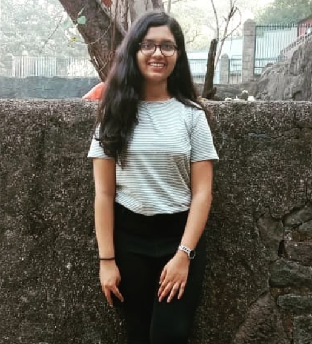

Jisha Anna Philip
Jisha Anna Philip
I am Jisha Anna Philip currently pursuing Bachelors of Engineering in Information
Technology Second Year (D10A).
I am the Public Relations Officer at ISTE VESIT
I am also the CR of my class as well as a member of
EBSB VESIT team. .
I am also working as an application developer at StoccGuru
I am also a Software Testing Associate at The Enterpreneurship Network
Interests
|
Strengths
|
Programming Skills
|